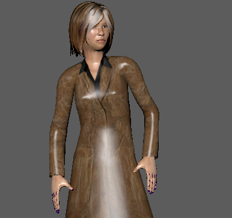
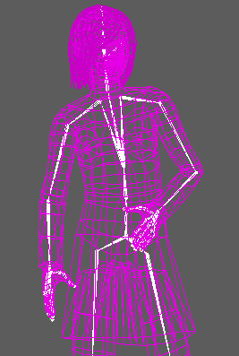
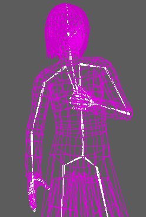
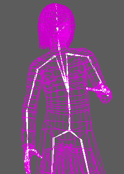
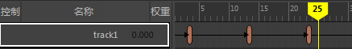
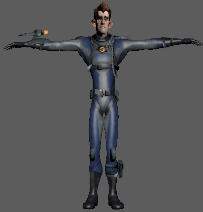
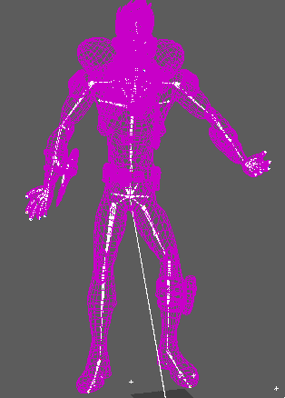
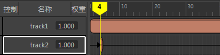
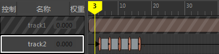

姿势片段是一种持续时间为 1 帧的特殊动画片段。姿势片段将选定对象中所有可设置关键帧属性的值存储在当前时间标记位置。
可以通过两种方法使用姿势片段创建动画：
- 使用装备角色创建新动画
- 编辑现有动画文件或运动捕捉数据
从装备角色创建动画
若要从装备角色创建新动画，请每隔几帧创建角色姿势的姿势片段，作为一种“定格”动画。然后，将这些姿势片段与过渡融合以创建逼真的运动。为此，您需要具有动画不会设置姿势的装备的角色。
提示： 最好是为包含要设置动画的对象的角色创建选择集，例如，NURBS 曲线、关节、定位器等。有关创建快速选择集的信息，请参见
保存和重用选择。
若要从姿势片段创建动画，请执行以下操作：
- 设置角色的姿势。

- 创建要捕捉的姿势时，请选择一个动画轨迹和角色所有的动画控制器。

- 选择轨迹后，从时间编辑器菜单栏中单击“从当前选择创建姿势片段”(Create Pose Clip from Selection)
（或按 P 键），以便捕捉关键帧计时和姿势。
注：
- 确保当前时间标记处在动画中要捕捉为 1 帧长姿势片段的确切位置。
- 为了获得真实的效果，请每隔 3 到 4 帧创建姿势片段；这些片段将自然融合。
- 如果未显式姿势片段，这可能是因为片段不包含任何信息，请检查是否已选择角色所有的动画控制器。尝试使用(Select > Hierarchy)选择 NURBS 曲线对象和/或定位器对象。
用于在当前帧捕捉角色值的片段将添加到轨迹中。
- 再次定位角色并捕捉另一个姿势片段。为了实现最佳融合插值，请使用彼此相似的姿势。

提示： 保持原始动画轨迹处于选定状态。否则，每个新姿势片段将添加到新轨迹中。
- 对于要收集的任何其他姿势，重复上述操作。

- 将所有姿势片段移动到相同轨迹，并尝试在它们之间创建过渡。

如果需要：
- 为所有包含过渡的姿势片段创建组片段，则使用时间编辑器的工具执行高级编辑（请参见将多个片段合并为组片段）
- 指定不同的姿势片段颜色，使您可以区分不同类型的姿势（例如，解说姿势、中间姿势、接触姿势等）
- 在组片段基础上创建层，进一步通过非破坏性方式修改动画（请参见将动画层添加到时间编辑器）
注： 如果姿势片段不包含任何信息，请检查是否已选择角色所有的动画控制器。尝试使用(Select > Hierarchy)选择 NURBS 曲线对象和/或定位器对象。
编辑现有动画
该方法可用于创建姿势片段快照，以便从预先存在的动画创建新动画。您将需要 MotionBuilder 中包含动画的角色和 FBX 文件。
- 打开角色文件。

- 将包含动画的 FBX 文件拖动到现有动画轨迹。
- 创建一个新的动画轨迹，以保存接下来要创建的动画。
- 拖动动画，直至到达要捕捉的姿势，然后选择角色所有的动画控制器。

- 选择新的动画轨迹，然后从时间编辑器菜单栏中选择“从当前选择创建姿势片段”(Create Pose Clip from Selection)
（或按 P 键），以便捕捉关键帧计时和姿势。

- 通过姿势片段创建所需的中间姿势和权重姿势。

为所有包含过渡的姿势片段创建组片段，则使用时间编辑器工具执行高级编辑
注： 如果姿势片段不包含任何信息，请检查是否已选择角色所有的动画控制器。尝试使用(Select > Hierarchy)选择 NURBS 曲线对象和/或定位器对象。